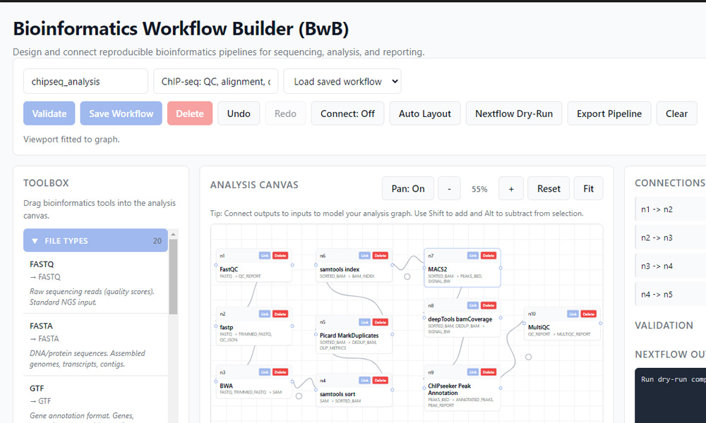
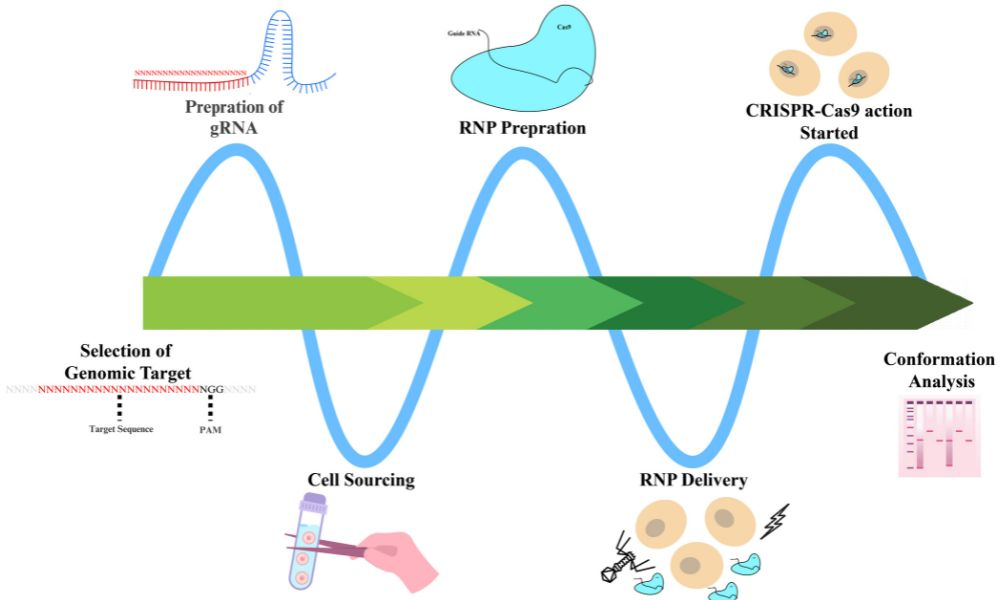
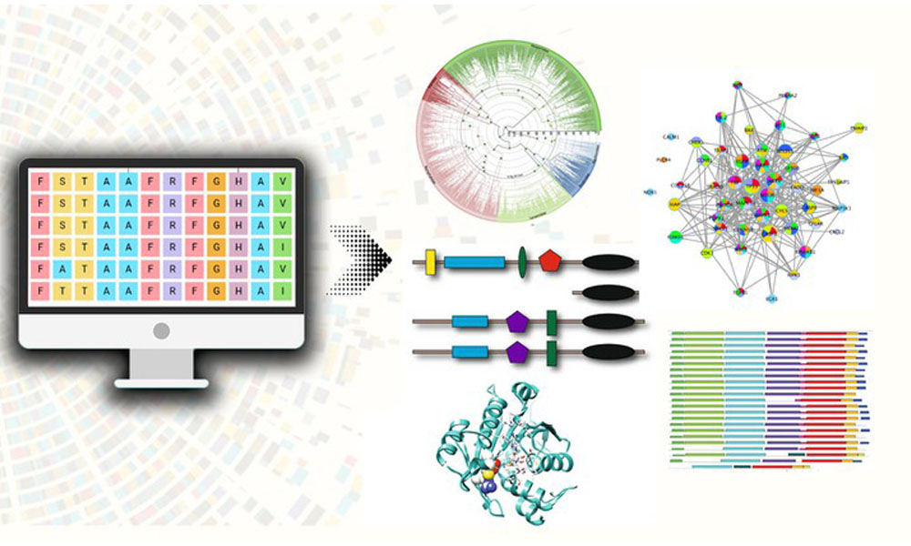
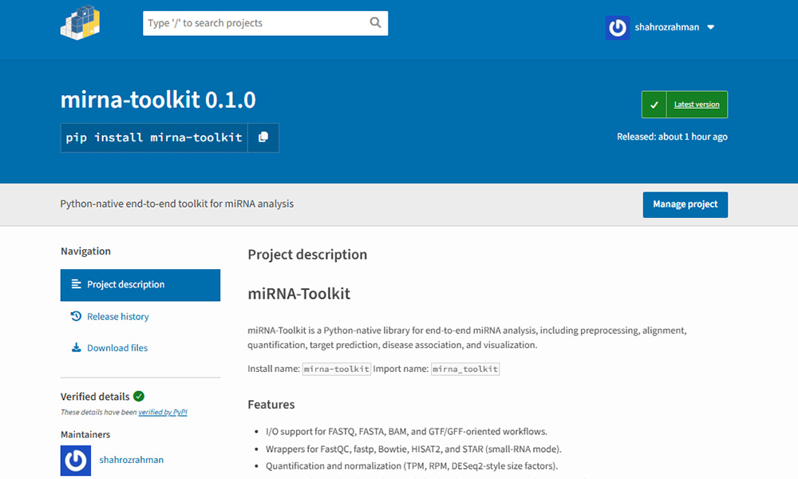
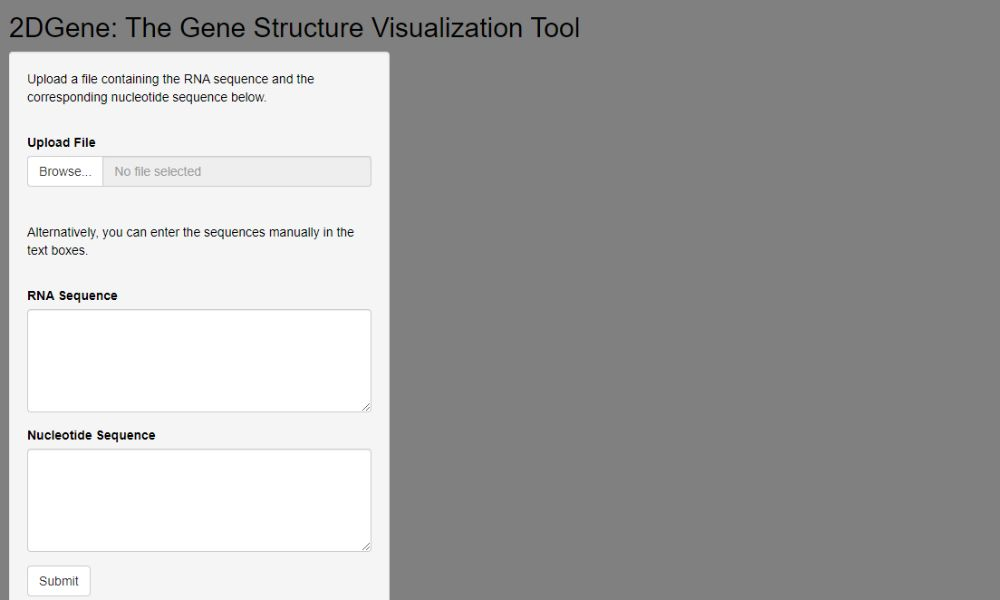
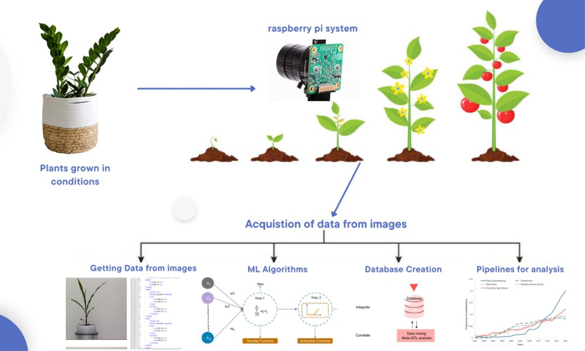
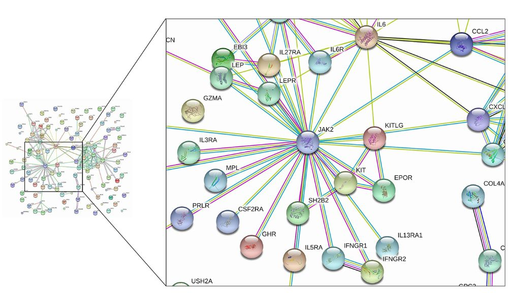

Udemy
NGS and Microarray Data Analysis In Bioinformatics
A Practical, End-to-End Guide to Gene Expression Analysis Using NGS and Microarray Data
Enroll NowHey there!
I turn complex biological data into research insights through computational genomics, transcriptomics, and machine learning. With experience in functional genomics, single-cell RNA-seq, and variant analysis, I build reproducible pipelines and analytical tools for plant and biomedical research.
My bioinformatics experience spans functional genomics research, freelance biological data analysis, and open-source software development. I work with high-throughput sequencing, single-cell RNA-seq, genomic variants, and biomedical datasets, developing reproducible workflows in Python, R, and Linux. I have contributed to 10 publications, including first-author functional genomics studies, and built tools for omics analysis and machine-learning evaluation. I hold a BS in Bioinformatics from Government College University Faisalabad (CGPA 3.72/4.00), combining computational skills with hands-on laboratory experience to investigate biological systems and disease-associated molecular mechanisms.
Publications
CV Projects
Workshops & Webinars
BS CGPA / 4.00
Comprehensive analysis of RNA-seq, ChIP-seq, and whole-genome sequencing data using state-of-the-art tools and pipelines.
Custom bioinformatics pipeline development and automation for high-throughput data processing and analysis workflows.
Advanced single-cell RNA-seq analysis including clustering, trajectory inference, and cell type identification.
Integrative analysis combining genomics, transcriptomics, and proteomics data for comprehensive biological insights.
Expert consultation on bioinformatics strategies and hands-on training for research teams and organizations.
Comprehensive variant calling, annotation, and interpretation for both germline and somatic mutations.
Freelance analysis of single-cell RNA-seq, transcriptomic, and genomic datasets. Developed reproducible Python, R, and Linux workflows and supported data interpretation, visualization, and scientific publication preparation.
Functional Genomics & Tissue Culture Lab. Conducted genome-wide gene family studies, NGS analysis, and variant calling alongside real-time PCR and gel electrophoresis. Helped develop a phenotyping biosystem and implemented a machine-learning image-analysis pipeline that improved accuracy by about 30%.
Oil Technology Laboratory, Oilseeds Research Institute, AYUB Research. Used solvent extraction and near-infrared reflectance spectroscopy (NIR) to determine fatty acid profiles in oilseed crops, and prepared research reports.
Sichuan Agricultural University, China. Ongoing.
Government College University Faisalabad. CGPA: 3.72/4.00. Thesis: Identification of Novel Covid-19 Variants in Pakistan. Coursework included genomics, proteomics, systems biology, molecular genetics, algorithms, databases, and bioinformatics software development.
Organizer and speaker at a nationally recognized three-day GCUF workshop, providing training to over 1,000 students.
Organized and delivered a two-hour online bioinformatics.pk session on command-line tools for biological data analysis.
Speaker and organizer for a three-day online training program hosted by bioinformatics.pk.
Participant in an EMBL-EBI webinar on comparative multiomics pathway analysis using Reactome GSA.
A Practical, End-to-End Guide to Gene Expression Analysis Using NGS and Microarray Data
Enroll NowLearn how to Predict Protein 3D Structure using Computational Tools for Drug Discovery and more.
Enroll NowLearn the best of proteomics data analysis from protein sequence retrieval to 3D structure prediction and much more!
Enroll NowUnlock your True Potential as a Bioinformatician with Advanced Database Techniques
Enroll NowLearn the best of sequence alignment through hands on practice exercises and best instructions.
Enroll NowCurrent Genomics, 2026
View PaperJournal of Computational Biophysics and Chemistry, 2026
View PaperCrop and Pasture Science, 2025
View PaperIn: Functional Genomics: Methods and Protocols, Volume 3. Taylor & Francis, 2025
View ChapterIntegrative Plant Biotechnology, 2025
View PaperAnnual Methodological Archive Research Review, 2025
View PaperBMC Genomic Data, 2024
View PaperIn: Plant Functional Genomics: Methods and Protocols, Volume 2. Springer US, 2024
View ChapterFunctional Plant Biology, 2024
View PaperPlant Stress, 2023
View PaperBenchmarks binary classifiers on RNA-seq counts, gene expression matrices, and other numerical omics data. Keeps preprocessing within training folds and validates on held-out patients, cohorts, or time periods, with reproducible HTML reports.
Benchmarked logistic regression models across 65,172 variants with gene-held-out cross-validation. Molecular annotations improved mean average precision from 0.299 to 0.319.
Modular, end-to-end miRNA analysis: preprocessing, quality control, alignment, expression quantification and normalization, target prediction, and disease association analysis.
View on PyPICombines pre-analyzed gene expression and genomic variant data with statistical analysis, machine learning, and text mining for colorectal cancer research.
Interactive single-cell transcriptomic exploration with dimensionality reduction, clustering, marker gene identification, and customizable input formats.
Loads, filters, summarizes, and merges FASTA, FASTQ, VCF, and GFF data into DataFrames for efficient bioinformatics analysis.







Research ethics is a set of principles, rules, and regulations that guide the conduct of research...
Read MoreIn the rapidly evolving field of bioinformatics, the deluge of biological data poses a significant challenge...
Read MoreRNA (ribonucleic acid) is a molecule that plays a critical role in many cellular processes...
Read MoreReady to collaborate on your next bioinformatics project? Let's discuss how I can help you achieve your research goals.
Bioinformatics analysis, reproducible pipelines, and research collaboration.